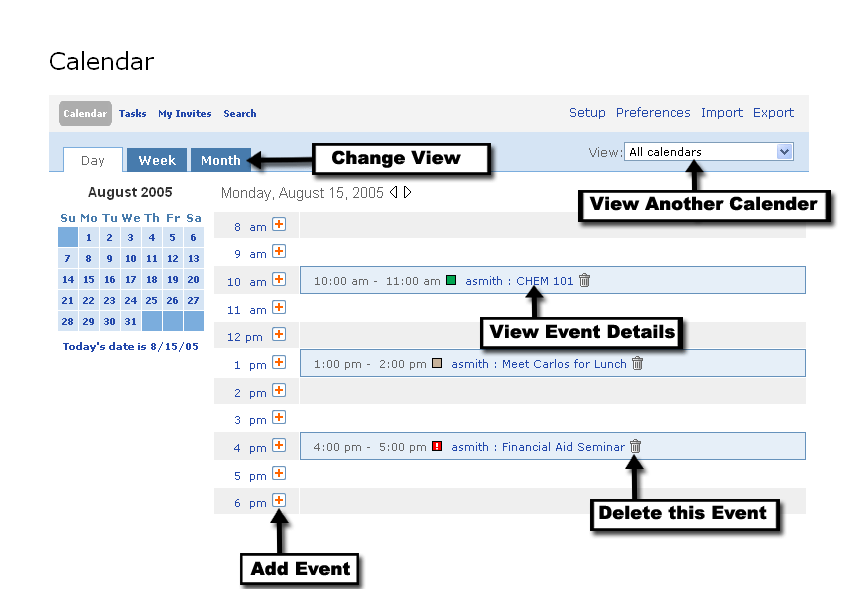

Detailed Daily Event View
The detailed daily view in the Calendar allows the user to see all events for a particular day, as well as add additional items.
At the top of the channel, there are several variables that can be modified:
1. Overall Display
2. Date Range
3. View

Calendar
The main section within this view displays a range of times, as well as any currently scheduled events. You can edit/delete an event directly from this view.
To edit an event or view event details, click the event title.
To delete an event, click the Delete icon next to the event title.
To add an event, simply click the Add icon next to the associated time frame for your event. Clicking this icon will bring you into the New Event view.